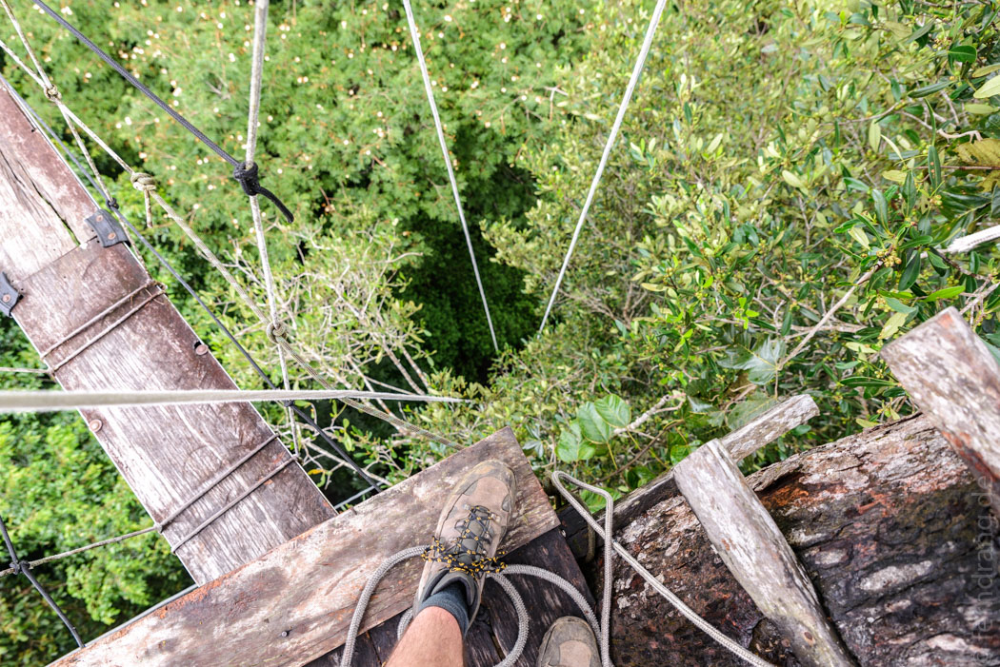
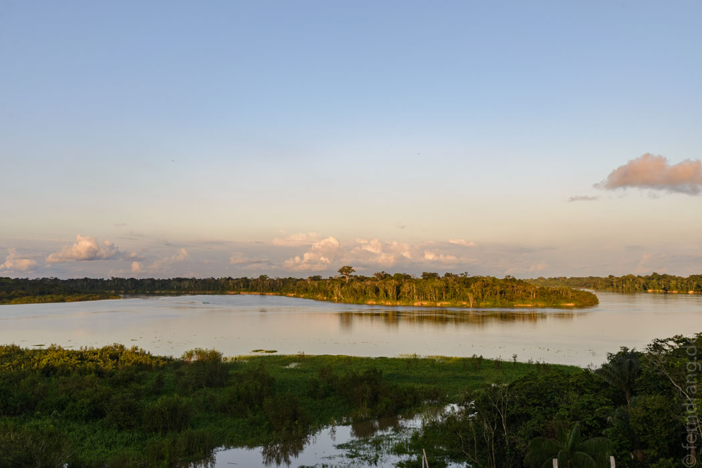
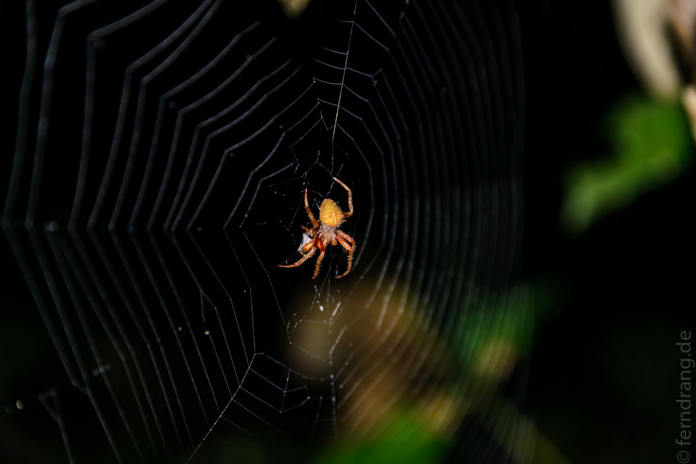
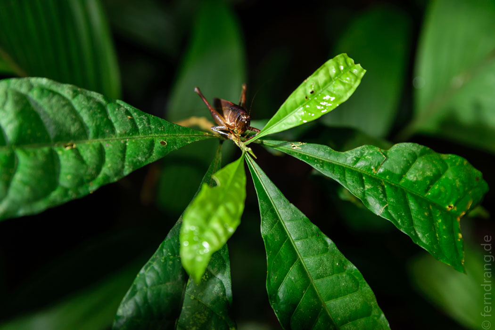
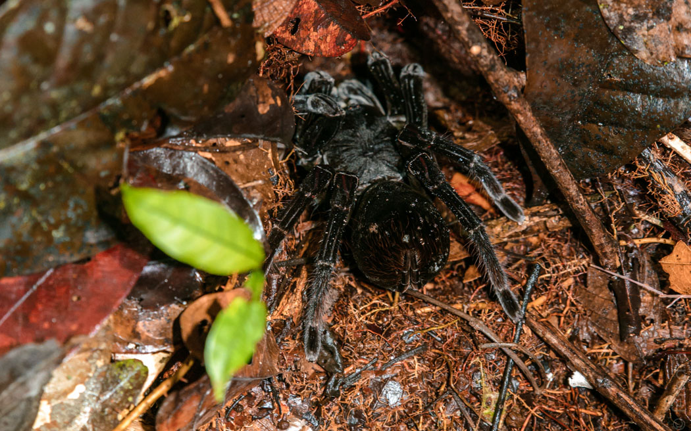
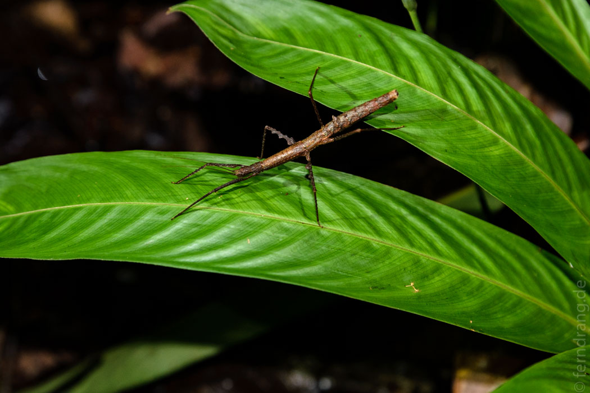

Die Nacht über hat es wieder fast durchgehend geschüttet. Wir haben unsere Matratze leicht verschoben, um nicht unter dem Loch im Dach zu liegen. Zum Morgen hin hört der Regen auf. Stattdessen berieselt uns der Hauspapagei, der Hahn des Regenwalds, ab Sonnenaufgang mit seinen Krächzereien. Am Vormittag haben wir eine Canopy-Tour gemacht. Wir waren zwar schon öfters auf Hängebrücken in Baumkronen, aber hier musste man selbst an einem Seil hochklettern. Das geht bei 40m natürlich nicht ganz ohne Hilfe. Mit Seilbremsen und Fußschlaufen haben wir uns raupenartig das Seil hochgearbeitet. Oben hat man einen schönen Blick über den endlosen Wald. Hinter einer wackligen Brücke haben sie noch ein Drahtseil gespannt, an dem man zum nächsten Baum sausen kann.

Am Nachmittag haben wir unsere Kayak-Tour wiederholt – diesmal ohne Regen. Ein Stück den Fluß herauf gibt es eine versteckte Einfahrt zu einem kleinen Seitenarm, der nur ein paar Meter breit ist. Es gibt kein richtiges Ufer, vielmehr fängt einfach das undurchdringliche Dickicht des Waldes an. Mit jedem Regenguss klettert das Wasser etwas höher, so dass Büsche und Baumstämme im Wasser stehen. Viele Bäume stürzen von dieser übertriebenen Wasserfürsorge um und versperren den Wasserweg. Wir mussten tief gebückt mit den Kayaks unter den Stämmen her. Nach einer Weile führt der Weg in die einsame Lagune San Antonio. Hier toben sich Geier und Eisvögel und unter der Wasseroberfläche angeblich Piranhas und dickere Fisch aus. Die Lagune hat eine Linksbiegung, so dass wir zwei Stunden lang ständig dachten, dass sie gleich zu Ende sein müsste. Urplötzlich war sie das auch – ohne erkennbaren Ausgang. Wir hatten schon die Sorge, dass wir das alles wieder zurück rudern müssten, aber dann haben wir die Kayaks ein paar Meter über einen schlammigen Trampelpfad über Land gezerrt und sind auf wundersame Weise wieder in dem Eingangskanal gelandet. Auf einem Satellitenfoto haben wir später gesehen, dass die Lagune eine alte Flusskehre ist, die nicht mehr durchflossen wird, und fast kreisrund ist.

Durch einen Zufall haben wir ein Upgrade aus der Maloka in eine private Hütte bekommen. Eine brasilianische Schulklasse ist angekommen. Das wollten sie uns netterweise ersparen. Dadurch hatten wir den Luxus eines eigenen Badezimmers und acht Betten zu unserer freien Verfügung, allerdings immer noch ohne Strom. Bevor wir uns aber an diesen Genuss gemacht haben, sind wir noch auf eine Nachtwanderung in Dschungel aufgebrochen. Seit Borneo haben wir da Blut geleckt. Und tatsächlich lässt sich auch hier nachts Allerlei in den Kegel der Stirnlampe holen: Frösche, Insekten, Spinnen inklusive einer monströsen Vogelspinne und sogar ein waschechtes Stick Insect, das wie ein wandelndes Ästchen im Wald eigentlich hätte unentdeckt bleiben sollen. Eigentlich sollte der Ausflug nur ein Stündchen dauern, ist durch unsere Insekten-Such-Laune aber fast dreimal so lange ausgefallen. Das eigentliche Ziel war eine Stelle mit, sagen wir, magischen Pilzen, die im dunkeln durch Biolumineszenz schwach leuchten. Durch den Vollmond ist das Wunder eine Nummer kleiner ausgefallen als erwartet. Aber es ist trotzdem ganz spannend im dunklen Regenwald mal die Lampe auszumachen und im Schein von Pilzen zu wandern.



